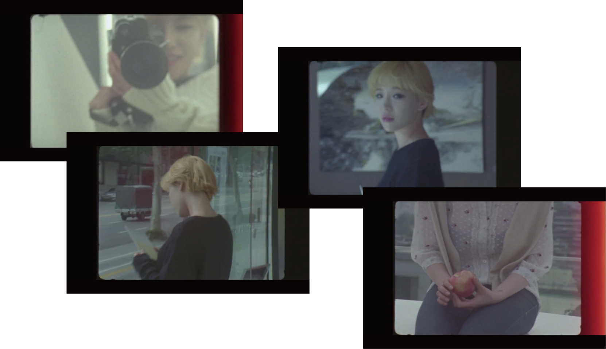
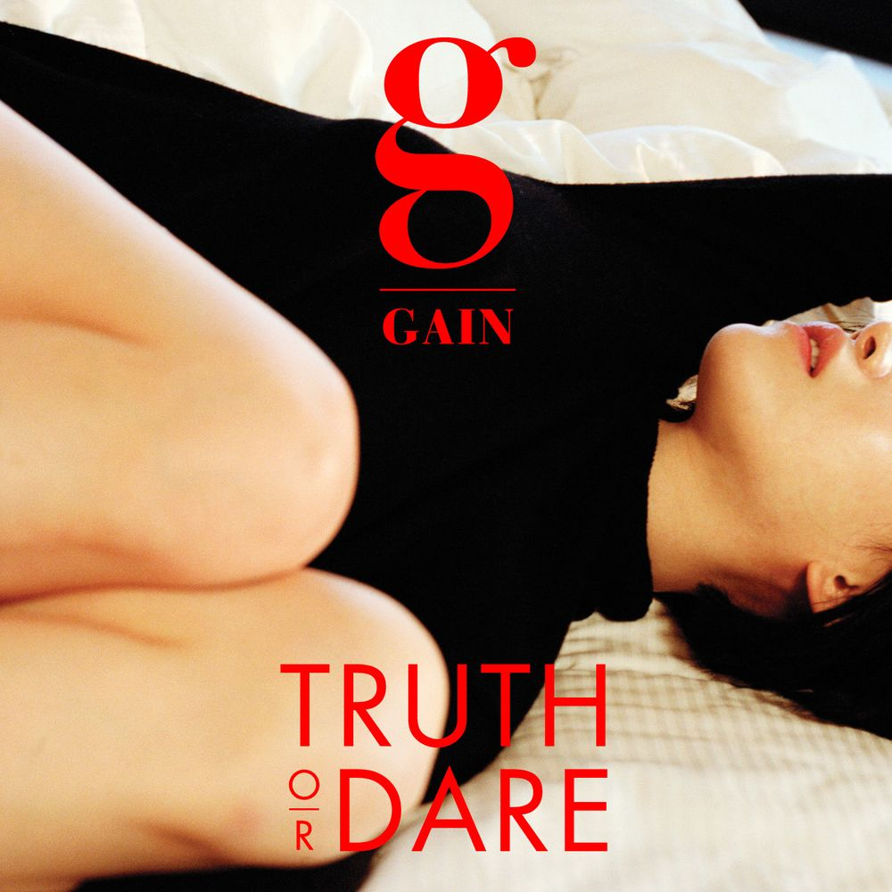
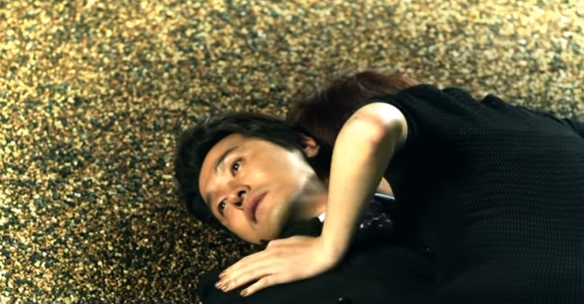
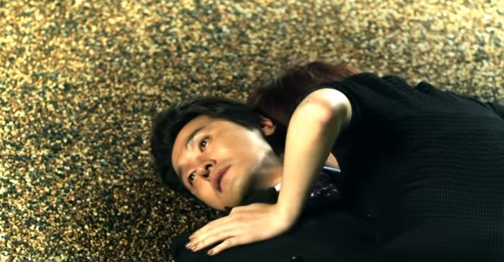

Talk About S. - The 2nd Mini Album
2012.10.05 발매
Track list
01. 팅커벨 (Tinker Bell)
02. 그녀를 만나 (Meet Her)
03. 피어나 (Bloom)
04. 시선 (Sight)
05. Catch Me If You Can
가인의 ‘피어나’는 뮤직비디오 때문에 선정성 논란을 치뤘고, 실제로 뮤직비디오에 19금 연령제한이 걸리게 되었다.
사실 영상이 없는 상태에서 노래를 들어도 가사를 보면 굉장히 많은 성적 은유들을 내포하고 있다는 것을 알 수 있는데,
그럼에도 불구하고, 그것이 저급하거나 지저분하게 느껴지는 것이 아닌 정말로 꽃이 ‘피어나는 듯한’ 감정이 느껴지는 곡이다.
여담이지만, 첫경험을 소재로 한 곡이라서 그런지, 피어나와 함께 유튜브 알고리즘에 김준수의 '비단길'이 많이 뜨는데,
비단길에 대한 시청자들의 반응은 피어나와는 정말로 정반대, 극과 극이다(...)

뮤직비디오 초반은 영사기로 상영하는 듯한 영상들을 보여준다.
누군가가 가인을 카메라로 찍고, 가인 역시 자신을 찍어주는 사람을 카메라로 찍고 있는 듯한 모습.
여기서 영사기로 상영중인 이 영상은 과거의 기록, 꿈, 또는 회상이라고 할 수 있다.
여성의 첫경험이 소재인 노래이므로, 상대방과 관계를 나누기 전의 모습이라고
해석할 수 있다.
영상 밖의 모습이 화면에 비춰지고, 꿈이 끝나고 현실로 돌아오는 모습
탁자 위에 놓여진 사과는 계속해서 등장하는데, 남자가 놓고 간 선물, 또는 사랑을 뜻하는 것이라고 할 수 있다.
'나 말이야 못다 핀 꽃 한 송이야
그런 날 피워낸 sunshine
매끄러운 motion
Chemical blue ocean'
가사에서 ‘못다 핀 꽃 한 송이’는 여성을 뜻한다. 여기에 ‘매끄러운 동작’이 가해져 chemical blue ocean이 일어나는데,
이는 상대방과 사랑을 나누어 행복해지는 모습을 표현한 것이다.
뮤직비디오 중반에 가인과 남자가 서로 사랑을 나누는 듯한 장면과, 가인의 댄스 퍼포먼스 영상이 번갈아가면서 나오는데,
퍼포먼스 영상을 보면 배경에 꽃이 피어나는 듯한 모션 그래픽이 나온다.
상대방과 사랑의 결실을 맺는 과정을 꽃이 피어나는 모습에 비유한 것이라고 볼 수 있다.
사랑하는 사람과의 관계를 표현한 노래는 이전에도 있었지만, ‘피어나’가 그 중에서도 높은 평가를 받는 이유가 있다.
보통 관계를 표현할 때, 여성의 신체를 묘사하는 가사가 많이 등장하지만, 피어나는 사랑을 나누면서 느끼는 감정을 표현하고 있다.
또, 보통 여성이 처녀성을 잃는 것을 ‘꽃을 꺾는다’ 라고 표현하는데, 피어나는 꽃을 ‘꺾는 것’이 아닌, 꽃이 ‘피어나는 것’으로 비유했다.
처녀성을 ‘상실’ 한다는 것이 ‘타락’을 의미하는 듯한 기존의 표현법에서 벗어나 여성의 성을 아름답게 표현했다는 점에서
많은 사람들이 ‘피어나’의 예술적 가치를 높게 평가하고 있다.
Truth or Dare - The 3rd Mini Album
2014.02.06 발매

Track list
01. 진실 혹은 대담 (Truth or Dare)
02. FxxK U (Feat. 범키)
03. Q&A (Feat. 조권)
04. Black & White
05. 폭로 (Expose)
06. A Tempo (CD Only Track)
선공개곡 'fxxk u'는 발매 당시 주지훈과 가인의 파격적인 커플 연기로 화제가 되었던 곡이다.
당시에는 선정적이라는 이유로 화제가 되었던 노래지만, 뮤직비디오와 가사를 잘 살펴보면
이 노래가 전달하고자 했던 메시지를 알 수 있다.
뮤직비디오의 장면 중,
남자가 가인을 벽에 거세게 밀어붙이는 장면이 나온다.
그러면서 남자는 가사에서 이렇게 말한다.
'어떤 말도 믿지마
니가 본 나 그게 전부야
밀어내려 하지마 why not?
우리 사랑하잖아'
반면, 가인은 그런 남자를 밀쳐내면서 이렇게 말한다.
'stop it, 미안하지만
Fxxk U, don’t want it now
당연한 것처럼 니 곁에 눕긴 싫어'
테이블 맞은 편에 앉아서 남자는 이렇게 말한다.
'이젠 나를 알잖아, 어른다운 사랑을 원해'
그리고 이어지는 다음 장면에서
가인은 불안한 표정으로 남자에게 안겨있다.
많은 사람들이 이 장면을 보고,
'가스라이팅' 이라는 상황을 떠올렸다.
(가스라이팅: 타인의 심리나 상황을 교묘하게 조작해
대상이 자신 스스로를 의심하게 만들고 정신적으로
귀속시키는 행동을 뜻하는 심리학 용어)
많은 사람들이 발매 당시에는 그저 연인간의 다툼과 사랑을 그려낸 곡이라고 생각했지만,
사실 뮤직비디오를 보면 가인의 눈빛은 절대 사랑이 아니라는 것을 알 수 있다.
또, 남성은 항상 잘 차려입은 정장 차림으로 나오는 데에 비해,
가인은 언제나 움츠러든 자세에, 제대로 옷도 갖춰입지 못한 모습으로 나온다.
즉, 이것은 단순히 연인간의 다툼의 모습을 그려낸 것이 아니라,
여성이 남성에게 일방적으로 지배를 당하는 '데이트폭력'을 그려낸 것이다.
발매 당시에는 데이트폭력이나 가스라이팅이라는 용어가 대중들에게 익숙하지 않았지만,
이러한 문제가 사회이슈로 떠오른 지금은, 대중들이 이 곡을 더 정확히 이해할 수 있게 되었다.
타이틀곡 '진실 혹은 대담' 뮤직비디오는 페이크 다큐 형식으로 제작되었다.
뮤직비디오 초반에, 가인의 지인들이 가인에 대한 생각을 이야기하는 인터뷰 장면들이 나오는데,
가인의 선정적인 이미지, 가인에 대한 루머에 대한 이야기를 나누고 있다.
가인에 대한 성희롱을 은근슬쩍 해대고, 그녀의 인성을 언급하며 은근슬쩍 뒷담을 하지만,
가인이 등장하면 아무 일도 없었다는 듯이 가인과 일상적인 대화를 나눈다.
물론 어디까지나 뮤직비디오는 연출된 장면이고, 이들의 진심을 이야기한 것은 아니겠지만,
가인이 연예계 생활을 하면서 어떤 일들을 겪어왔는지 간접적으로나마 느낄 수 있는 장면들이다
<진실 혹은 대담>의 가사를 보면 처음에
‘안녕하세요 얘기 좀 할까요’라고 하며,
누군가에게 말을 건네는 듯 한데,
이는 가인에 대한 소문을 퍼뜨리는 누군가에게
건네는 메시지라는 것을 알 수 있다.
뮤직비디오 장면 중, 가인이 코르셋을 조이고,
외설적인 화보를 찍는 장면이 나온다.
화보를 찍으면서 가인은 작가에게,
‘사람들이 좋아하겠죠?’라고 묻고,
작가는 맞장구치며 더 선정적인 자세를 요구한다.
그러면서 이러한 포즈에 어떠한 의미가 있는지
계속해서 설명하고, 가인은 이를 납득하려고
노력하는 모습을 보인다.
그리고 이 장면에 삽입된 가인의 나레이션.
‘내가 좋아하는 것은 하나도 없다’, ‘저는 제가 집 밖을 나가는 순간 연기를 한다고 생각한다.’
이 말은 방송에 비춰지는 가인의 모습들이, 가인이 정말로 원하는 자신의 모습이 아니라는 것을 뜻한다.
사람들이 좋아하는 모습으로 자신을 포장하지만, 거기에 자신이 원하는 것은 하나도 없었다고 말하는 장면.
가인이 연예계 생활을 하면서 느꼈던 감정들이 고스란히 전해진다.
그러나 아이러니하게도,
이 노래와 뮤비가 전달하고자 하는 바가
분명히 있음에도 불구하고,
당시에 뮤직비디오가 나왔을 때,
가인이 코르셋을 조이는 부분만 잘라서
‘영혼까지 끌어모으는 가인’이라는 제목으로
클립이 돌아다녔다.
뮤직비디오 속 이야기들이 현실이라는 것을
확실하게 느낄 수 있는 일이었다.
Hawwah - The 4rd Mini Album
2015. 3. 12. (목) 00:00 발매
Track list
01. Apple (Feat. 박재범)
02. Free Will (Feat. Dok2)
03. Paradise Lost
04. The First Temptation
05. 두 여자 (Two Women)
06. Guilty
이 앨범은 전체적으로 인류 최초로 금기를 깬 여성, 하와를 주제로 하고 있는데,
여기서 '하와'는 우리가 흔히 알고 있는 '이브'의 또 다른 이름이다.
이브, 즉 하와는 아담의 갈비뼈로 만들어진 인류 최초의 여성이지만,
뱀의 유혹으로 에덴동산에서 신이 금지한 선악과를 깨물어 인류 최초의 죄를 저질렀다.
이로 인해 아담과 이브는 에덴동산에서 쫓겨나고, 유한한 생명을 선고받는 벌을 받게 된다.
하지만, 가인의 앨범에서는 하와의 존재를 조금 다르게 해석했다.
파이프오르간 앞에서 흰 드레스를 입은 하와,
그리고 그런 하와에게
'어둠속에 내가 있을테니, 불을 꺼줘'라고 말하는 뱀
빛은 '선'을 상징하기 때문에, '악'을 상징하는 뱀은
불이 꺼져야 하와에게 다가갈 수 있기 때문이다.
그리고 2절에서 나오는 이 부분의 가사.
'믿지마 내 목소리가 아닌 모든 말은 거짓말'
이 때의 화자는 '뱀'이고,
가인이 입고 있는 흰 드레스는 인류 최초의 여성으로서의
'신성함'을 의미한다고 볼 수 있다.
또, 이 긴 드레스가 마치 뱀의 허물처럼 보이기도 하는데,
아직 뱀의 말에 설득당하지 못한 하와를 이 의상을 통해
선악을 구별하지 못한 채 허물 안에 갇혀있는
모습을 표현한 것이 아닐까 하고 생각해볼 수 있다.
이에 대한 근거는 어쩌면 신의 권능을 탐한 것이라 볼 수 있는
'선악과를 먹는 행위'를 계단을 통해 '올라가는'행위에
빗댄 것으로 추측된다는 점과,
파이프오르간이 있던 공간, 즉 안정적이던 실내에서 벗어나
선악과가 열리는 나무를 향해 위험할 수 있는
야외로 움직인다는 점이다.
중간중간 안무가 나오는 장면들은 뱀을 상징한다고 생각할 수 있는데,
배경이 뱀의 껍질과 비슷해보이기도 하고,
안무가 뱀의 움직임과 상당히 유사하다는 점을 근거로 들 수 있다.
실제로 뮤비에서도 안무 바로 뒤에 해당 안무와 비슷한
뱀의 움직임을 넣는다는 식의 연출을 보여주며
이러한 점을 더욱 강조한 것으로 보인다.
또 하나 주목해볼 점은,
춤추는 모습이 아래에 똑같이 반사되어 비친다는 것인데,
작사가 김이나는 제작발표회에서 '하와 안에 뱀이 있었다'라는
허구적인 설정을 만들었다고 말했는데,
뱀이 실제로 존재하는 것이 아닌,
하와의 욕망을 상징하는 메타포라는 의미를 담아
뱀과 하와가 하나가 된 듯한 장면을 연출한 것이 아닐까 하는 생각이 든다.
또, 뮤비 마지막에 다수의 나체 남성들이 꿈틀거리는 이 장면은 쾌락의 절정을 보여주고 있다.
자신을 벌하기 위해 다가온 신을 보며 두려운 표정을 짓지만, 그 이면에는 여전히 자유의지와
쾌락을 향한 욕망이 꿈틀대고 있음을 표현한 장면이 아닐까 하고 생각한다.
End Again - The 1st Album Part.1
2016. 9. 9. (금) 00:00 발매
Track list
01. Carrie (The First Day)
02. Carnival (The Last Day)
03. 반딧불이의 숲 (Forest of Firefly)
04. 비밀 (Secret)
05. Begin Again (Inst.)
'카니발'은 죽음을 주제로 한 노래지만, 분위기는 밝고 화려한 곡인데, 이는 멕시코의 '죽은자의 날'을 컨셉으로 삼았기 때문이다.
대부분의 나라에서 죽음은 굉장히 엄숙하고 정숙하게 애도되지만, 멕시코인들은 삶과 죽음이 분리되지 않은 하나의 일직선상에
있다고 여기고, 삶은 짧은 순간으로, 저승을 영원한 세계로 본다고 한다.
그렇기에 죽은 혼이 최종 목적지인 저승에 갈 수 있도록 신나고 화려한 축제를 벌이는 행사가 바로 '죽은자의 날'이다.
'카니발'에서 죽음을 대하는 태도는 멕시코인들이 죽음을 대하는 태도와 유사하다고 볼 수 있다.
가인의 '카니발'은 삶을 하나의 '여행'에 비유했다.
카니발의 부제는 바로 'The last day(마지막 날)'
그리고 이 앨범의 수록곡 '캐리'는 프리퀄 역할을 하고 있다.
'캐리'의 부제는 카니발과 정반대로 'The first day(첫째 날)'이다.
'캐리'의 가사를 살펴보면,
'My name is Carrie.
잘 부탁해 오래 기억될 나일 테니'
라는 가사와 함께 여행을 시작할 기차를 기다리고 있다.
기차가 오자 가인(캐리)은 서둘러 짐을 챙겨 자리를 뜬다.
이 때 가인이 놓고 간 물건이 있는데, 바로 '우산'과 '기차표'이다.
여기서 양 손 가득 든 짐은 '살면서 자신에게 주어진 역할'을,
가인이 신은 높은 굽의 구두는 '삶의 고난'을,
기차표는 '긴 여정(삶)을 시작' 또는
'잃어버린 나의 삶에서 소중한 가치'를 의미한다.
그리고 가인의 삶에서 잃어버린 가치를 찾아주는 이 남자.
이 남자는 가인과 함께 이 여행,
즉, 그녀의 삶의 동반자일 것이라 추측된다.
그리고 이어지는 '카니발'에서는 가인의 'the last day'에 대한 이야기가 그려진다.
카니발 뮤직비디오 첫 장면에 나오는 이 곳은 가인의 장례식, 그리고 장례식을 찾은 백발의 한 남자.
이 남자는 가인의 기차표를 찾아주었던 바로 그 동반자라고 볼 수 있다.
관 위에는 가인이 앉아있는데, 여기서 가인은 남자와 달리 어린 모습으로 묘사된다.
또, 환상의 동물인 유니콘의 문신을 새긴 채로 등장하는데, 이는 이 장면에 등장하는 가인이
이미 죽은 사람의 환영 또는 환상이라는 것을 의미한다.
또, 장례식장에 놓인 꽃들이 하얀 국화가 아닌 노란색 꽃인 것을 볼 수 있는데,
이것은 멕시코인들이 '죽은자의 날' 행사 때 사용하는 꽃이 노란 금잔화이기 때문이다.
당시 뮤비 속 가인의 의상이 선정성 논란에 휩싸였는데, 이 의상도 단순히 노출을 위한 것이 아니라 의미가 있다고 볼 수 있다.
캐리에 등장한 가인은 온갖 치장을 하고, 굉장히 많은 짐을 가지고 있는데, 카니발에 등장한 가인은 이와는 대조되게
몸에 걸친 것을 최소화하고, 깨끗한 순백의 의상을 많이 입고 등장한다. 이것은 삶의 시작인 '아기 때의 모습'을 연출한 것이다.
가인의 관 앞에 편지를 내려놓는 남자.
그리고 이를 보며 미소 짓고 우산을 펼치는 가인의 모습.
여기서 가인이 편 우산은 '캐리' 뮤비에서
가인이 잃어버렸던 그 우산이다.
삶에서 찾지 못했던 중요한 가치를
죽음에서야 비로소 찾게 된 것이다.
죽음을 통해 긴 여행의 끝을 완성해낸 것이다.
가인은 자신의 죽음을 두려워하지도, 슬퍼하지도 않는다.
되려 나의 죽음에 너무 슬퍼하지 말고,
내가 없더라도 너무 마음아파하지 말라는 것이 카니발의 가사이다.
오늘 밤 열리는 이 카니발은 장례식의 마지막 날 밤.
나는 불꽃처럼 아름답게 살았으니
이 날이 지나면 그땐 나를 잊고 살아가라고 가인은 말한다.
자신의 관을 운반하는 차 위에서 퍼레이드를 하는 가인의 모습.
그리고 터지는 불꽃 아래에서 춤을 추는 가인의 모습.
마치 파티를 즐기는 듯한 가인의 모습은
여행의 종착지에 다다른 후 홀가분한 모습을 표현한 것이다.
자신의 죽음 앞에서 슬퍼하지 않고,
이생에서 짊어졌던 모든 짐들을 훌훌 털어내고서
또 다른 삶의 시작을 노래하는 가인의 모습은
마냥 슬프게만 생각했던 '죽음'이라는 주제를
색다른 시선으로 바라볼 수 있게 만들었다.


 
